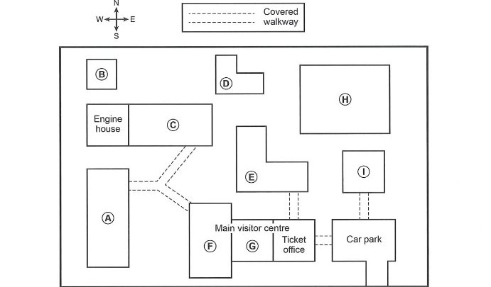

Part 2
Questions 11–12
Choose TWO letters, A–E.
Which TWO pieces of advice are given about the Marsden Coastal Walk?
11–12
Questions 13–14
Choose TWO letters, A–E.
Which TWO things are said about the Melby Heritage Walk?
13–14
Questions 15–20
Label the map below.
Write the correct letter, A–I, next to Questions 15–20.

Questions: